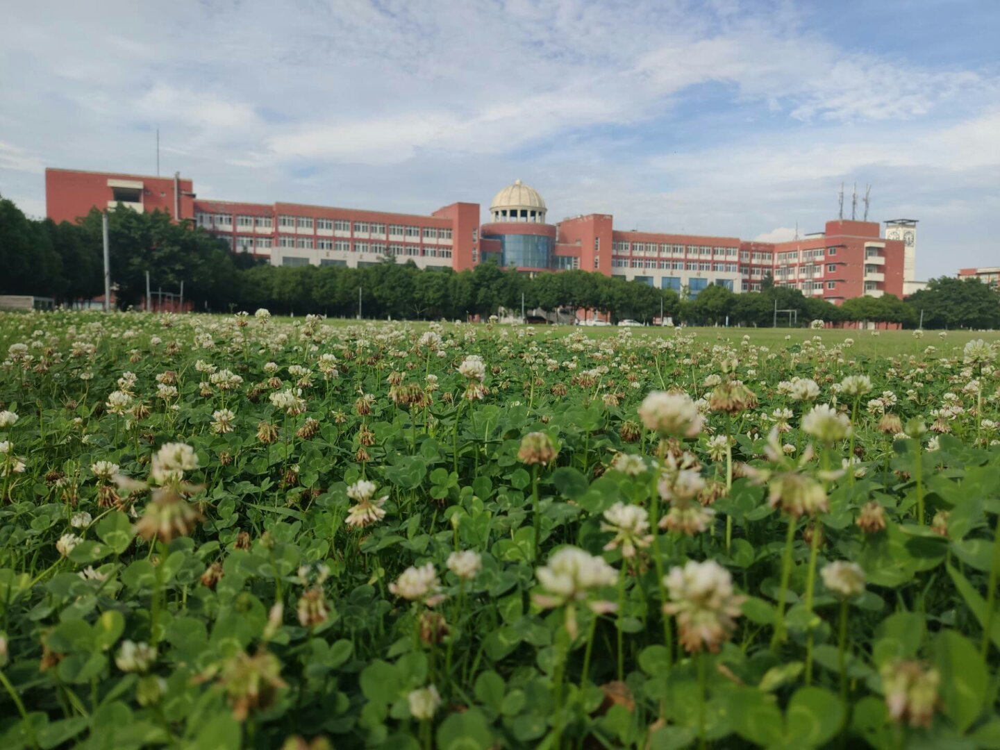

- 

学院介绍：
电子科技大学成都学院是由国家教育部批准建立的独立学院(教发函200421 号)，是由电子科技大学与成都国腾实业集团合作创办，是采用新模式新机制举办的以本科层次为主的全日制普通高等学校。学院创建于2001年，坐落在享有"天府之国"美誉的成都，位于国家级高新技术产业开发区--成都市高新西区，占地1159亩，规划面积1500亩。现有本科、专科学生近17000名。学院学科门类配套，专业设置适应社会需求，现有系(分院)10个，本、专科专业40余个。截至2018年6月，学院是国家首批示范性软件学院电子科技大学软件学院本科教学基地、国家国际软件人才培训基地、国家软件产业基地人才培训中心、国家863 IC设计产业化基地和软件孵化器人才培养中心。2003年8月，学院被四川省委、省政府授予"四川省人才开发先进单位"。
想了解更多信息请点击“电子科技大学成都学院官网”